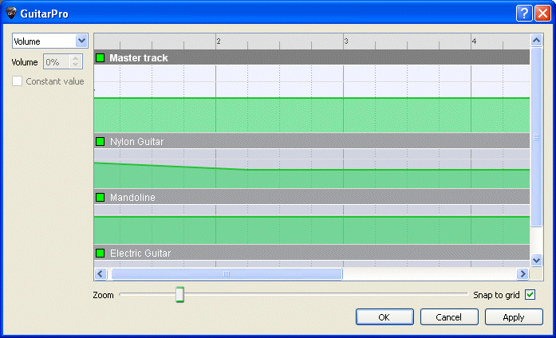

Tipp:
Die Statusleiste zeigt das aktuelle Tempo an.
Tipp:
Die Statusleiste zeigt das aktuelle Tempo an.Sie kõnnen vor dem Beginn der Wiedergabe Ihres Musikstückes, EInstellungen für die Spureffekte mit dem Mischpult und die Tempoeinstellungüber das Menü Welt:Instrument festlegen. Doch es ist auch mõglich zu jeder Zeit Änderungen des Tempos, der Lautstärke in der Partitur vorzunehmen im Menü Automatisierungen (Bearbeiten Automatisierungen .. oder F10 oder mit den Knõpfen unter Welt: Bearbeiten).
Sie kõnnen auch die Variationen der Effektkette wechseln (siehe Audio Kapitel). Man kann aber nicht die Bank einer Spur mitten im Stück ändern.

Im Menü Effekte > Variationen kõnnen Sie die Variationen der Effektkette wechseln (siehe Ton konfigurieren). Man kann aber nicht die Bank einer Spur mitten im Stück ändern.
Tipp:
Die Statusleiste zeigt das aktuelle Tempo an.